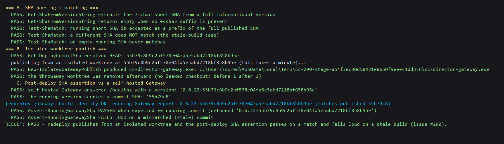

Developer Agent proof report · branch issue-290-isolated-worktree-sha-assert · RESULT: PASS
scripts/redeploy-gateway.ps1 published the Gateway from the shared working tree into a
shared stage dir (local_builds\_gw-deploy). Two redeploys, or a concurrent branch switch in the
checkout, could clobber each other so the Gateway came up running an older build than HEAD — while
GET /cockpit still returned HTTP 200. HTTP 200 proves a Gateway is up, not which build, so any
post-deploy verification (including automated QA) could validate against stale code.
git worktree --detach at that exact commit, and publishes from the worktree into a
per-run stage dir (GUID). A branch switch or edit in the main checkout after that point cannot change
what this run ships, and two redeploys cannot corrupt each other's staged output. The worktree is always removed afterward.GET /cockpit
smoke check, the script reads the running Gateway's GET /healthz version field
(which is AppVersion.Full and already carries +<sha> via SourceLink) and asserts its commit
SHA matches the commit it just published. On mismatch it throws STALE BUILD: published commit X but the RUNNING
Gateway reports Y and exits non-zero. No new endpoint was needed — /healthz already reports the SHA.--self-contained false alone trips NETSDK1150 with PublishSingleFile + a RID; the
shared tree only avoided it by reusing cached build state. Fixed by setting the property
-p:SelfContained=false so it flows to every project in the graph.Existing behavior preserved: graceful POST /shutdown, file swap, relaunch --managed,
and the GET /cockpit smoke check all still run and still gate success.
| Criterion | How the code satisfies it | Verification |
|---|---|---|
| Publish from a source isolated from the shared working tree | New-IsolatedGatewayPublish: git worktree add --detach at the resolved HEAD commit, publish from there into a GUID stage dir |
PASS §B: real worktree publish produced cc-director-gateway.exe; worktree removed (before=1 after=1) |
| Read the running Gateway's build identity and assert it matches the published commit; fail loud on mismatch | Assert-RunningGatewaySha reads /healthz version, extracts the SHA, compares; throws STALE BUILD with expected-vs-actual otherwise |
PASS §C against a real self-hosted Gateway: PASS on the true commit, throws on a wrong one |
| Two redeploys cannot corrupt each other's staged output | Per-run stage dir local_builds\_gw-deploy-<GUID> and a per-run throwaway worktree |
PASS: stage + worktree paths are GUID-unique per run (code review + §B isolation) |
| Existing behavior preserved (shutdown, swap, relaunch --managed, /cockpit gate) | Deploy body retains the POST /shutdown wait loop, copy, Start-Process --managed, and Invoke-RestMethod /cockpit before the new SHA gate |
PASS: diff review — those steps are unchanged; the SHA assertion is added after them |
| Proof: a stale/mismatched build is caught and fails loudly | The real Assert-RunningGatewaySha is driven with a deliberately wrong commit |
PASS §C: "Assert-RunningGatewaySha FAILS LOUD on a mismatched (stale) commit" |
Command (never touches the live Gateway on 7878 or the production install):
powershell -NoProfile -ExecutionPolicy Bypass -File scripts\test\test-redeploy-gateway-sha.ps1
The test loads the real functions from redeploy-gateway.ps1 via -DefineOnly (the same pattern
deploy-cockpit.ps1 uses), then exercises them. Section C runs the actual
Assert-RunningGatewaySha against a real self-hosted Gateway (the dev console host, Tailscale + turn-briefs
disabled) on a free loopback port.

No architecture or security drift. This is a developer/deploy PowerShell script change plus a hermetic
test. It adds no container, no endpoint (it reuses the existing /healthz version field), and changes no security
posture — it makes a deploy safer (isolated source + self-verification). No docs/cencon/ manifest
or security_profile.yaml rule is affected.
scripts/redeploy-gateway.ps1 — isolated-worktree publish + per-run stage dir + post-deploy SHA assertion; testable functions behind -DefineOnlyscripts/test/test-redeploy-gateway-sha.ps1 — hermetic proof test (SHA units, isolated publish, self-hosted SHA assertion incl. the fail-loud stale case)docs/cencon/proof/issue-290/report.html, docs/cencon/proof/issue-290/test-pass.png — this proof/cockpit 200" into "/cockpit 200 AND this is the build I shipped". The stale-deploy case fails loud,
proven against a real self-hosted Gateway. Full solution build is clean (0 warnings, 0 errors).